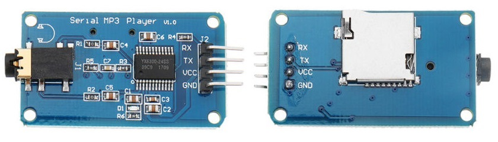

|
MD_YX5300 Library
1.3
Library for YX5300 MP3 player IC
|
|
MD_YX5300 Library
1.3
Library for YX5300 MP3 player IC
|

The MP3 module communicates using asynchronous RS232 serial communication at 9600 bps, 8 data bits, No parity, 1 stop bit, no flow control.
Flow control is implemented using a serial request/response based on data packets with the following byte sequence:
| Byte | Value | Description |
|---|---|---|
| Start | 0x7e | The start of each packet, used for synchronization. |
| Version | 0xff | Always the same value in this implementation. |
| Length | 0x06 | Number of bytes between Start and Chk. |
| Cmd | 0x?? | Command code for required action. |
| Fback | 0x01 | Set to 1 for protocol feedback, 0 for none. |
| DataHi | 0x?? | Length-4 data bytes = 2 in this implementation. |
| DataLo | 0x?? | |
| ChkHi | 0x?? | Optional checksum for bytes between Start and Chk. |
| ChkLo | 0x?? | |
| End | 0xef | The end of each packet. |
The checksum is optional in the protocol packet. The library will use the checksum field if the C++ macro define USE_CHECKSUM is set to 1 in the header file.
The message flow between the device and MCU can be displayed on the Serial Monitor by the library when the C++ macro define LIBDEBUG is set to 1 in the main code file.
There are 2 basic type of message flows between the Host and YX5300.
The first type is a simple message to set a parameter or cause an action. In this case the messages are exchanged as one request/response pair, shown in the sequence chart below. The request contains the command or setting, the response acknowledges the command.
The second type is a message that is requesting information from the YX5300. In this case the same simple message flow (requesting the data, acknowledging the request) is followed a short time later by another message from the device containing the requested data which is the in turn acknowledged by the Host, as shown in the sequence chart below. This second message can effectively be treated as an unsolicited message containing information about the device.
This library manages the serial interface to the TX5300 by taking care of the request/response pairs, but the user application needs to understand and how to handle unsolicited messages (including response to data request). The MP3 Player responds to command requests but it also sends unsolicited messages when certain events occur (eg, TF card removed or inserted).
How message are processed by the application is flexible and depends on the MD_YX5300::setSynchronous() setting and whether a callback function is defined using MD_YX5300::setCallback(). This is explained in the text that follows.
The first choice in processing messages is whether to process them inline with the application sequence (synchronous) or separately (asynchronous).
Synchronous: The command message is sent and the code waits for the acknowledgment before returning to the calling application. This is relatively inefficient of CPU time as it involves a busy wait, but is easy to implement in code flow and works well enough for most applications.
Asynchronous: The command message is sent and the library immediately returns. The response message is processed as it returns and the calling application can continue to run while this happens. Once the response is received, the application can be notified through a callback or polled status (see below). This method gives the calling application priority to use the CPU between messages but requires the application to become "message flow" aware.
Independently of the sync/async mode, the application can choose to be informed that received messages are ready to process either by polling completion status or using a callback. The relevant notification data is placed in a return data structure (MD_YX5300::cbData) for the application to process.
How the message is processed also depends on the synchronous setting, as shown in the two variants for the message sequence diagrams in each section below.
Polled: The return status of the MD_YX5300::check() method is used to signal that an unsolicited message has been received. In polled mode a true returned from MD_YX5300::check() is followed by a MD_YX5300::getStatus() call to retrieve the relevant MD_YX5300::cbData structure.
Synchronous polled application and message flow
Asynchronous polled application and message flow
Callback: If a callback function is defined (see MD_YX5300::setCallback()), every unsolicited message received will be processed through the callback mechanism.
In callback mode, the call to MD_YX5300::check() triggers a callback with the relevant MD_YX5300::cbData structure passed to the callback function. Additionally, in synchronous mode both the callback and the return from MD_YX5300::check() will signal receipt of the same message, so the application code should guard against processing the message twice.
Synchronous callback application and message flow
Asynchronous callback application and message flow